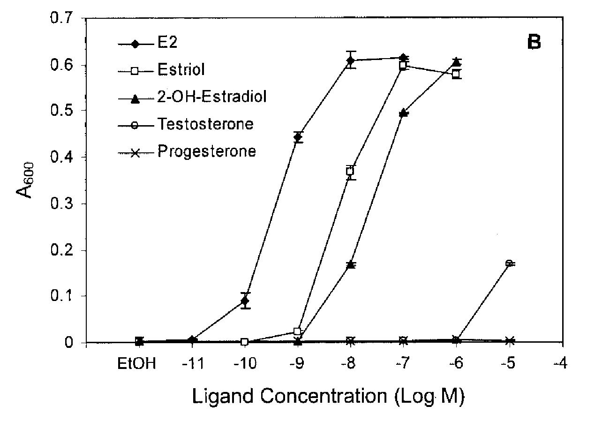
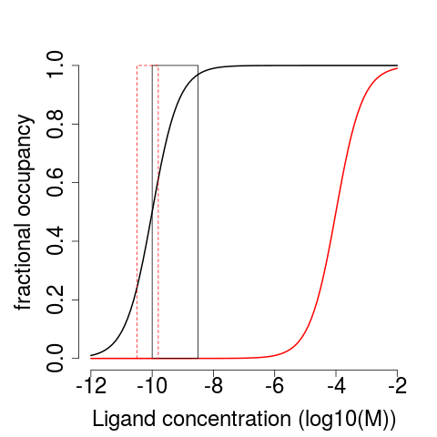

Many animals exhibit sexual dimorphism


Estrogen and testosterone bind to different receptors, turning on different genes
- Estrogen binds to the estrogen receptor
- Testosterone binds to the androgen receptor
Receptors have almost identical steroid binding pockets
How do almost identical receptors distinguish between almost identical steroids?
Binding specificity is discrimination between steroids.
Specificity is determined by:
- shape of the pocket
- polar interactions
Biochemists use dissociation constants ($K_{D}$) to measure binding affinity
$ML \rightleftarrows M + L$
$M$ is macromolecule (protein)
$L$ is ligand (small molecule)
We can measure $K_{D}$ by following $\theta$ versus $[L]$
$K_{D} = \frac{[M][L]}{[ML]}$
$[ML] \times K_{D} = [M][L]$
$[ML] = \frac{[M][L]}{K_{D}}$
$\theta = \frac{[ML]}{[M] + [ML]}$
$\theta = \frac{[M][L]/K_{D}}{[M] + [M][L]/K_{D}}$
$\theta = \frac{[L]/K_{D}}{1 + [L]/K_{D}}$
$\theta = \frac{1}{1 + K_{D}/[L]}$
The $K_{D}$ is the concentration of $L$ at which $\theta = 0.5$.
 Chen et al. (2004) JBC 279(32):33855-33864Steroids have only a small range of blood concentrations
{kind=link}
ER responds to physiological concentrations of estrogen but not testosterone
Is one hydrogen bond, in principle, enough to explain the difference in bindng?
Summary
- Proteins can bind to specific molecules in the cellular environment
- Specificity is acheived by shape complementarity and polar contacs.
- The strength of these interactions is quantified by the Dissociation constant ($K_{D}$)
- $K_{D}$ is tuned to the concentration of the molecule in the cell